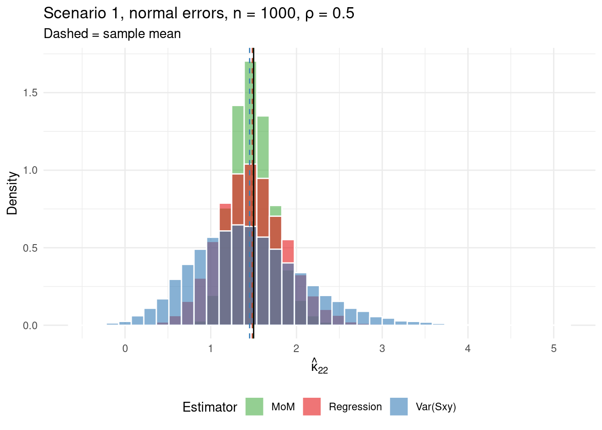
5 Kappa Estimation
5.1 Motivation
The asymptotic variance of \(\hat\rho\) is \[ v^2 = \frac{1}{n}\!\left[(1-\rho^2)\!\left(\omega_x^2 + \omega_y^2 - 2\rho\,\omega_{xy}\right) + \frac{\rho^2}{4}(\kappa_{40}+2\kappa_{22}+\kappa_{04}) - \rho(\kappa_{31}+\kappa_{13}) + \tfrac{5}{2}(1-\rho^2)^2 + \kappa_{22}\right]. \] Under \(H_0: \rho = 0\) this reduces to \[ \boxed{ v^2 = \frac{1}{n}\!\left(\omega_x^2 + \omega_y^2 + \kappa_{22} + \frac{5}{2}\right). } \] Under Gaussianity \(\kappa_{22} = 1\) and the null variance is \((\omega_x^2 + \omega_y^2 + 7/2)/n\). Without Gaussianity, \(\kappa_{22}\) is unknown and must be estimated from data to form a valid test statistic.
5.2 Estimating \(\kappa_{22}\)
There are multiple strategies to estimate \(\kappa_{22}\). Let \(s_i^{(k)} = (X_i - X_{i+k})(Y_i - Y_{i+k})\) and \[ S_{xy,i} = \frac{s_i^{(1)} + s_{i+1}^{(1)} - s_i^{(2)}}{2}, \] so that \(E[S_{xy,i}] = \sigma_{xy}\) at every index regardless of change points. Replacing \(Y\) with \(X\) gives \(S_{xx,i}\) (with \(E[S_{xx,i}] = \sigma_x^2\)), and similarly \(S_{yy,i}\) (with \(E[S_{yy,i}] = \sigma_y^2\)). Their averages satisfy \(\bar S_{xx} = \hat\sigma_x^2\), \(\bar S_{yy} = \hat\sigma_y^2\), \(\bar S_{xy} = \hat\sigma_{xy}\).
5.2.1 \(\operatorname{Var}(\hat{\sigma}_{xy})\)-Based Estimator
We find that \[ n\operatorname{Var}(\bar{S}_{xy}) = \kappa_{22}\sigma_x^2\sigma_y^2 + \frac{3\sigma_{xy}^2 + 4\sigma_{xy}\omega_{xy}}{2} + \left(\frac{\omega_x^2}{\sigma_x^2} + \frac{\omega_y^2}{\sigma_y^2} + \frac{5}{2}\right)\sigma_x^2\sigma_y^2. \]
Solving for \(\kappa_{22}\) and plugging in estimates gives \[ \boxed{\hat\kappa_{22}^{(xy)} = \frac{n\widehat{\operatorname{Var}}(\bar{S}_{xy})}{\hat\sigma_x^2\hat\sigma_y^2} - \frac{3}{2}\frac{\hat\sigma_{xy}^2}{\hat\sigma_x^2\hat\sigma_y^2} - 2\frac{\hat\sigma_{xy}\hat\omega_{xy}}{\hat\sigma_x^2\hat\sigma_y^2} - \frac{\hat\omega_x^2}{\hat\sigma_x^2} - \frac{\hat\omega_y^2}{\hat\sigma_y^2} - \frac{5}{2}.} \]
5.2.2 \(\operatorname{Cov}(\hat{\sigma}_x^2, \hat{\sigma}_y^2)\)-Based Estimator
We find that \[ n\operatorname{Cov}(\bar{S}_{xx}, \bar{S}_{yy}) = (\kappa_{22} - 1)\sigma_x^2\sigma_y^2 + 2\sigma_{xy}^2 + 4\sigma_{xy}\omega_{xy}. \]
Solving for \(\kappa_{22}\) and plugging in estimates gives \[ \boxed{\hat\kappa_{22}^{(xx,yy)} = \frac{n\widehat{\operatorname{Cov}}(\bar{S}_{xx}, \bar{S}_{yy})}{\hat\sigma_x^2\hat\sigma_y^2} - 2\frac{\hat\sigma_{xy}^2}{\hat\sigma_x^2\hat\sigma_y^2} - 4\frac{\hat\sigma_{xy}\hat\omega_{xy}}{\hat\sigma_x^2\hat\sigma_y^2} + 1.} \]
5.2.3 Regression Estimator
Let us define \[ T_k^{(2)}(X, Y) = \sum_{i=1}^n (X_i - X_{i+k})^2 (Y_i - Y_{i+k})^2. \]
It follows that \[ \begin{aligned} E[T_k^{(2)}(X, Y)] &= 2n(\kappa_{22}-1)\sigma_x^2\sigma_y^2 + 8\sigma_{xy}T_k(\theta_x,\theta_y) + 4n\sigma_{xy}^2 \\ &\quad + T_k^{(2)}(\theta_x, \theta_y) + 2\sigma_y^2 T_k(\theta_x,\theta_x) + 2\sigma_x^2 T_k(\theta_y,\theta_y) + 4n\sigma_x^2\sigma_y^2. \end{aligned} \]
All \(\theta\)-dependent terms vanish in \(2E[T_1^{(2)}] - E[T_2^{(2)}]\), giving \[ 2E[T_1^{(2)}(X,Y)] - E[T_2^{(2)}(X,Y)] = 2n(\kappa_{22}+1)\sigma_x^2\sigma_y^2 + 4n\sigma_{xy}^2. \]
Solving for \(\kappa_{22}\) and plugging in estimates gives \[ \boxed{\hat\kappa_{22}^{r} = \frac{2T_1^{(2)}(X,Y) - T_2^{(2)}(X,Y)}{2n\hat\sigma_x^2\hat\sigma_y^2} - 2\frac{\hat\sigma_{xy}^2}{\hat\sigma_x^2\hat\sigma_y^2} - 1.} \]
5.2.4 Method of Moments Estimator
This method is inspired from the classical approach.
The classical method to estimate \(\kappa_{22}\) is something like this \[ \hat{\kappa}_{22} = \frac{E(\varepsilon_x^2 \varepsilon_y^2)}{\sigma_x^2 \sigma_y^2}. \]
Of course, we cannot directly access \(\varepsilon_x\) and \(\varepsilon_y\) in the presence of change points. Instead, we use a proxy:
\[ \hat{\kappa}_{22} = \frac{E(S_{xx} S_{yy}) }{\sigma_x^2 \sigma_y^2}. \]
Unfortunately, it is not so simple. If we do some analysis, we’ll find that
\[ \frac{1}{n}\sum_i E[S_{xx,i}\,S_{yy,i}] = \kappa_{22}\sigma_x^2\sigma_y^2 + 3\sigma_{xy}^2 + 4\sigma_{xy}\omega_{xy}. \]
Therefore, we propose the method of moments estimator: \[ \boxed{ \hat{\kappa}_{22}^{\mathrm{MoM}} = \frac{\langle S_{xx}\,S_{yy}\rangle}{\hat\sigma_x^2\hat\sigma_y^2} - 3\frac{\hat\sigma_{xy}^2}{\hat\sigma_x^2\hat\sigma_y^2} - 4\frac{\hat\sigma_{xy}\hat\omega_{xy}}{\hat\sigma_x^2\hat\sigma_y^2}. } \]
5.3 Numerical Results
5.3.1 \(\kappa_{22}\) Estimation
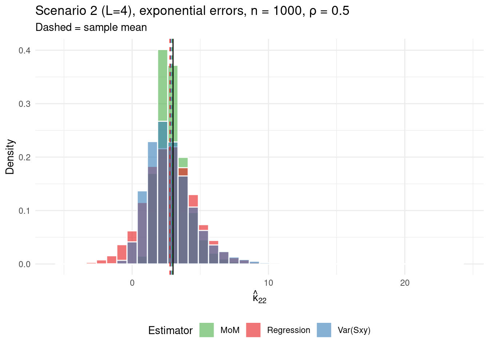
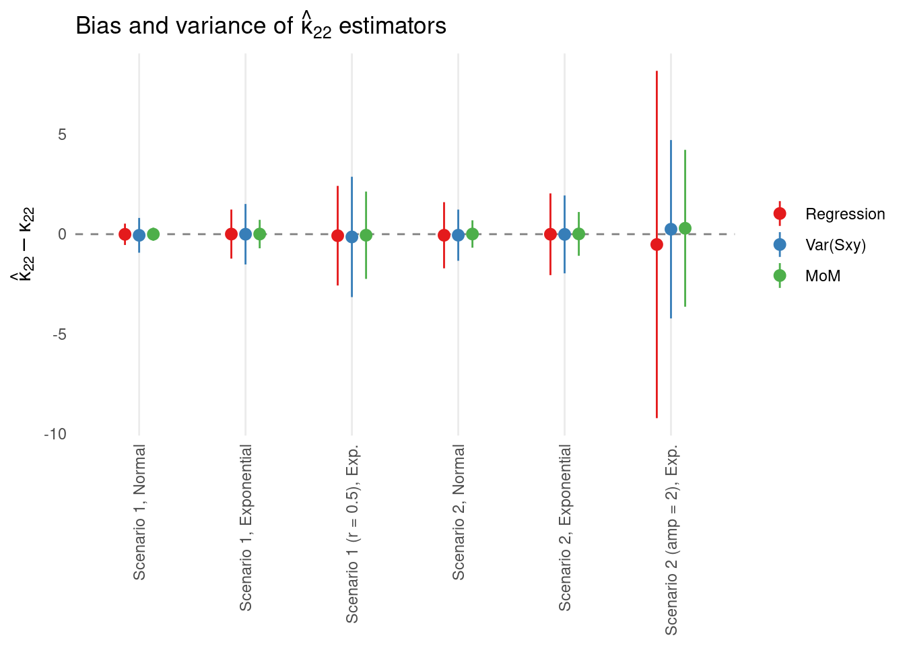
5.3.2 Null SE Estimation
While it seems pretty clear cut that the MoM estimator is the most accurate, it’s not entirely clear which method is the most powerful.
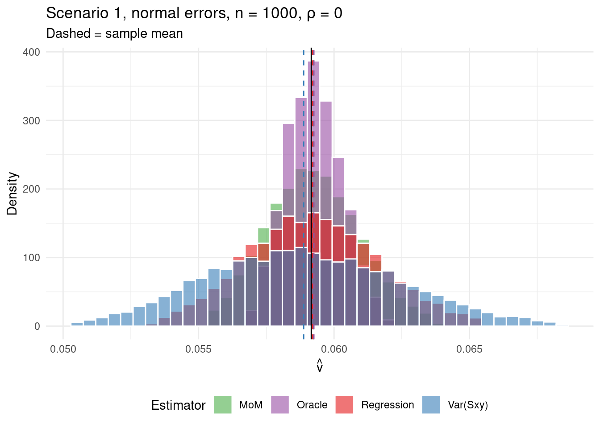
bias sd rmse
Oracle 0.00010 0.00108 0.00108
MoM 0.00009 0.00179 0.00179
Regression 0.00006 0.00256 0.00256
Var(Sxy) -0.00026 0.00377 0.00378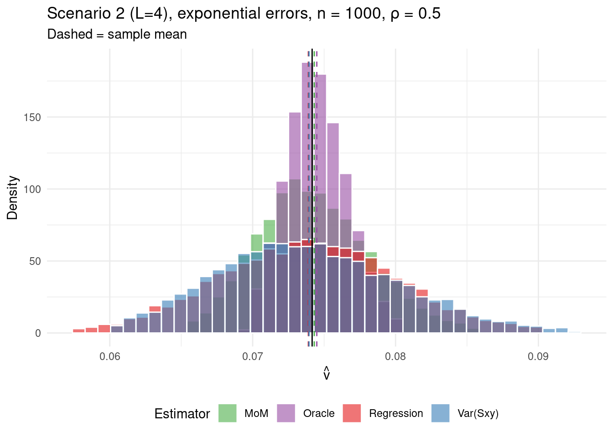
bias sd rmse
Oracle 0.00034 0.00225 0.00228
MoM 0.00019 0.00421 0.00421
Regression -0.00026 0.00674 0.00675
Var(Sxy) -0.00016 0.00684 0.00684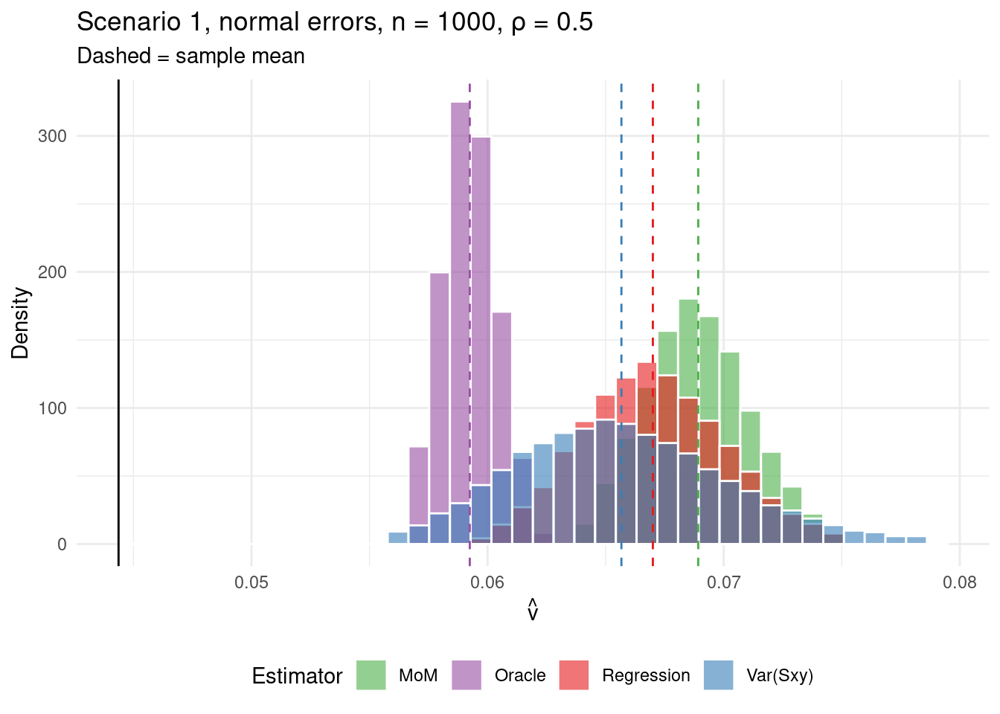
bias sd rmse
Oracle 0.01488 0.00119 0.01493
Var(Sxy) 0.02134 0.00480 0.02187
Regression 0.02264 0.00320 0.02287
MoM 0.02457 0.00234 0.02468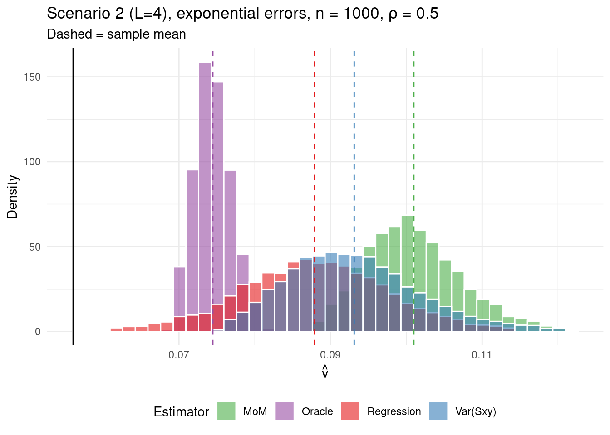
bias sd rmse
Oracle 0.01846 0.00258 0.01863
Regression 0.03183 0.01079 0.03361
Var(Sxy) 0.03723 0.00948 0.03842
MoM 0.04508 0.00697 0.04561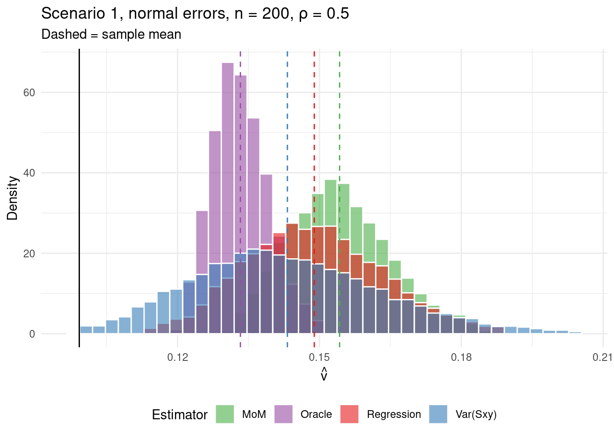
bias sd rmse
Oracle 0.03413 0.00628 0.03471
Var(Sxy) 0.04425 0.02160 0.04925
Regression 0.04973 0.01572 0.05215
MoM 0.05515 0.01144 0.05632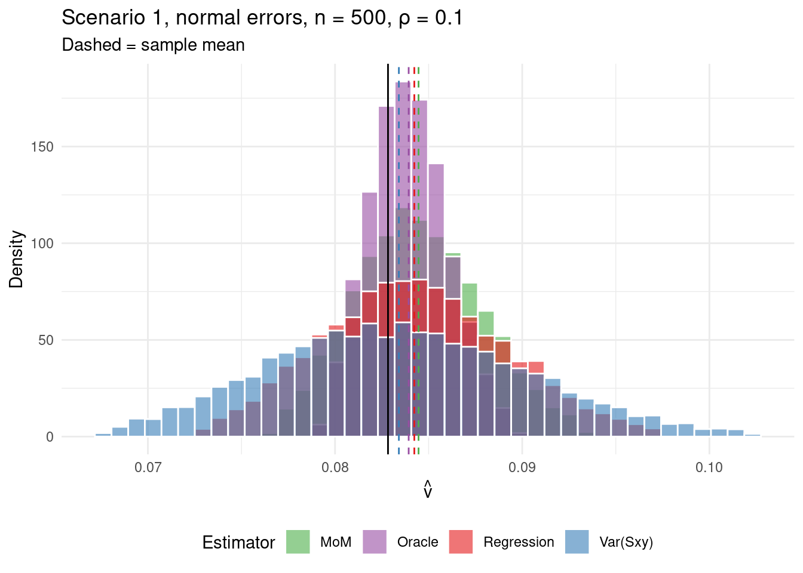
bias sd rmse
Oracle 0.00112 0.00219 0.00246
MoM 0.00165 0.00356 0.00393
Regression 0.00143 0.00520 0.00539
Var(Sxy) 0.00062 0.00734 0.00736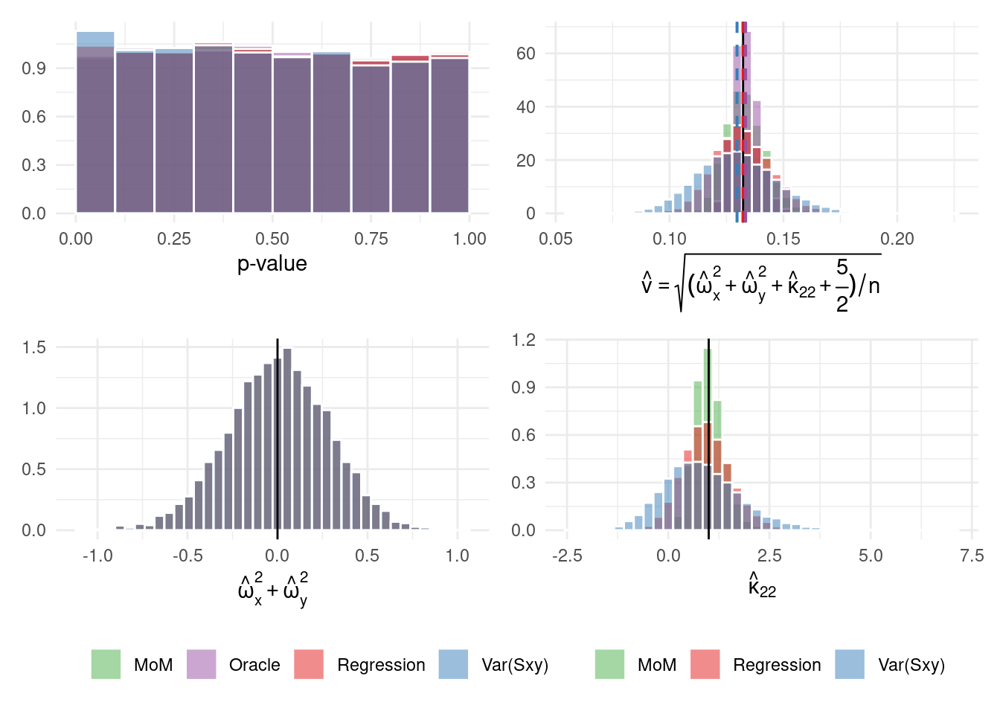
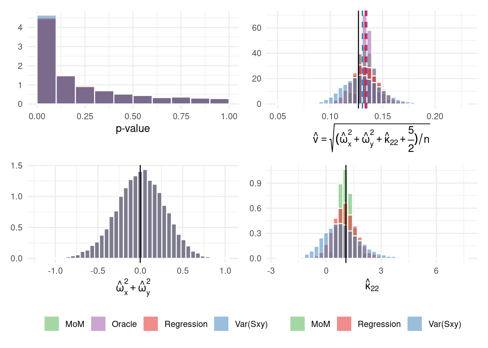
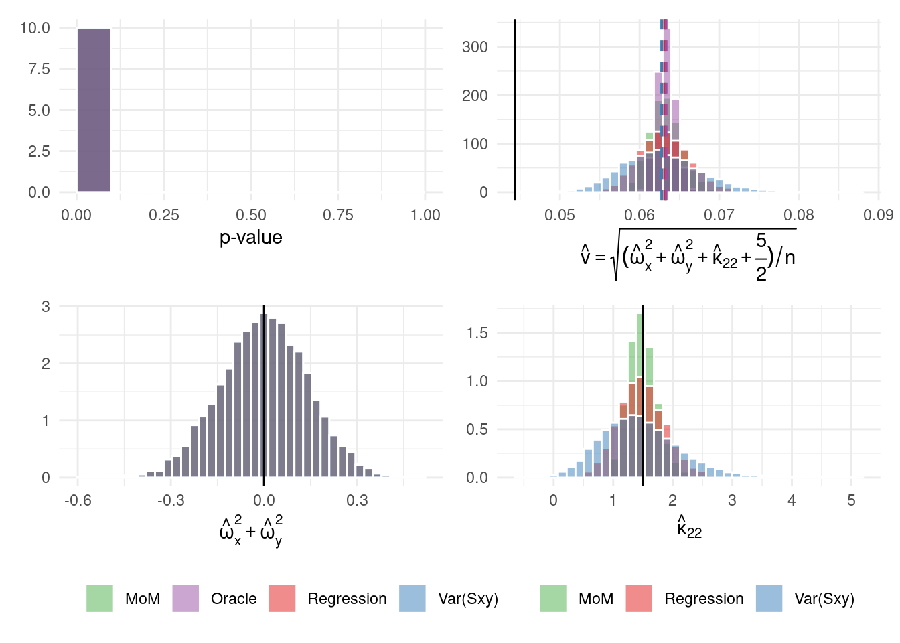